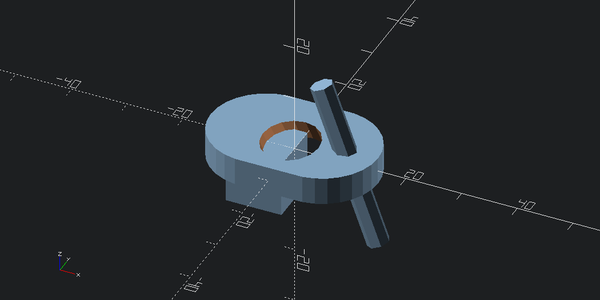

a = (10,20,30)
','.join(map(str,a))'10,20,30'–camera arg camera parameters when exporting png: =translate_x,y,z,rot_x,y,z,dist or =eye_x,y,z,center_x,y,z
a = (10,20,30)
','.join(map(str,a))'10,20,30'a = []
if a:
print("yes")export_to (model, export_format, w=600, h=300, colorscheme=None, translate=None, rot=None, dist=None, eye=None, center=None, viewall=True)
view (model, w=600, h=300, colorscheme=None, translate=None, rot=None, dist=None, eye=None, center=None, viewall=True)
Convert model to image
Lets add simple and fast automatic previews for all models:
We also delete __repr__ so that text representations of models are not saved as part of notebooks. These representations can get quite lengthy especially if we programatically generate models with python as opposed to using OpenSCAD model and import functions.
d = ((cylinder(5,r=10,center=True).right(5) + cylinder(5,r=10,center=True).left(5)).hull()
- cylinder(40,r=5, center=True).rotate([30,0,0])
+ cylinder(30,r=2,center=True).rotate([0,-20,0]).translate([10,0,0])
+ cube([10,10,10],center=True).translate([-5,0,-5]))
d
Viewing from different directions:
view_back (d, w=600, h=300, colorscheme=None, translate=None, rot=None, dist=None, eye=None, center=None, viewall=True)
view_front (d, w=600, h=300, colorscheme=None, translate=None, rot=None, dist=None, eye=None, center=None, viewall=True)
view_left (d, w=600, h=300, colorscheme=None, translate=None, rot=None, dist=None, eye=None, center=None, viewall=True)
view_right (d, w=600, h=300, colorscheme=None, translate=None, rot=None, dist=None, eye=None, center=None, viewall=True)
view_bottom (d, w=600, h=300, colorscheme=None, translate=None, rot=None, dist=None, eye=None, center=None, viewall=True)
view_top (d, w=600, h=300, colorscheme=None, translate=None, rot=None, dist=None, eye=None, center=None, viewall=True)
view_bottom(d)view_top(d)12/3*28.0view_all (d)
d
view_all(d)You can configure the colorscheme you like by setting scad.colorscheme to appropritate string:
fig, axs = plt.subplots(5,2, figsize=(12,24)) # 2,5
axs = axs.flatten()
for ax, cs in zip(axs, colorschemes):
ax.imshow(view(d, 300, 300, cs))
ax.axis("off")
ax.set_title(cs)export_to_stl (model)
stl = export_to_stl(d)volume, cog, inertia = stl.get_mass_properties()
print("Volume = {0}".format(volume))
print("Position of the center of gravity (COG) = {0}".format(cog))
print("Inertia matrix at expressed at the COG = {0}".format(inertia[0,:]))
print(" {0}".format(inertia[1,:]))
print(" {0}".format(inertia[2,:]))
print("Your mesh is closed: {0}".format(stl.is_closed(exact=True)))Volume = 3233.8717447916665
Position of the center of gravity (COG) = [-0.39244195 0.01129184 -1.48824022]
Inertia matrix at expressed at the COG = [ 1.26691235e+05 9.59202307e+01 -1.40417640e+04]
[ 9.59202307e+01 2.56363254e+05 -5.24176883e+02]
[-14041.76401878 -524.17688261 279222.64519674]
Your mesh is closed: Truefigure = pyplot.figure()
axes = figure.add_subplot(projection='3d')
axes.add_collection3d(mplot3d.art3d.Poly3DCollection(stl.vectors))
scale = stl.points.flatten()
axes.auto_scale_xyz(scale, scale, scale)
pyplot.show()